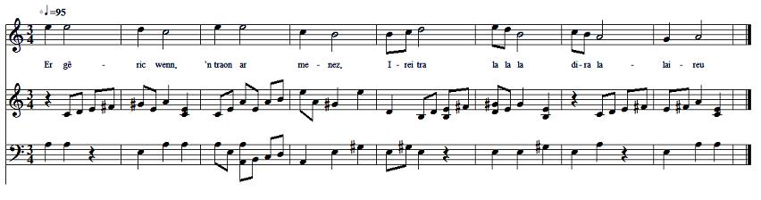

ER GÊRIC WENN, TRAON AR MENEZ
DANS LA MAISONNETTE BLANCHE, AU PIED DE LA MONTAGNE
Texte recueilli par François-Marie Luzel
auprès de Job Carbin, domestique à Huelgoat en 1872
Publié dans "Sonioù Breizh-Izel", p.138

Mélodie
Inconnue, remplacée par "An teir Vari"
Musique recueillie par Maurice Duhamel,
auprès de Marguerite Philippe, de Pluzunet, en 1867.
Arrangement Christian Souchon (c) 2008
Source: le site de M.Quentel, "Son ha ton" (voir "Liens")
VERSION "SONIOU BREIZ IZEL" |
English Translation of the Lyrics in the Luzel version of the song
|
- In the cottage at the hill's foot Irei tra la la la dira lalaireu! There lives my sweetheart Irei tra la la la dira lalala! Only she whom I love, whom I want, Can give me satisfaction. I must see her tonight Or my heart will burst... - My little heart did not burst: I have seen my pretty love. Fifty nights I've spent, On her threshold. She didn't know. |
The rain, the wind flogged me And have torn my clothes to shreds. Nothing comes and trusts me Except her breath when she sleeps in her bed Except her breath coming from her bed To me through the keyhole. Three pairs of shoes I wore out. But I don't know her decision. The fourth I have on now And I don't know her decision. No, five pairs, if I reckon well And I don't know what she has decided. |
- If you want to know my decision I see no reason for concealing it from you: There are three paths around my house. Choose one to go, this one or that one. Choose one of them. It's as you like, Provided it takes you far away! - I prefer to love whoever pleases me Than to own riches I don't need. Riches will come, riches will go, Riches that are of no use. Riches decay like mellow pears Whilst true love lasts forever. Better is a handful of love Than an ovenful of gold and silver. |

Fransoazig ha Pierrig (collecté par Luzel)
Ar Maen Faoutet (collecté par F. Cadic)
Retour à "SON AN DAOL" du 'Barzhaz Breizh'